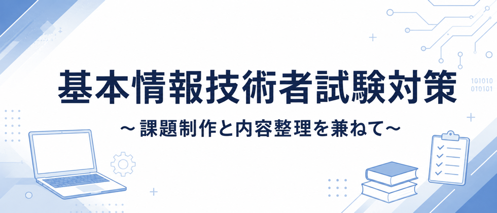

独立行政法人情報処理推進機構（IPA）が実施している経済産業省認定の国家資格。
試験は「科目A」と「科目B」に分かれている。
科目Aは試験時間90分の四択選択式で60問出題されIT全般の幅広い知識が問われる。（後述のIPA提供の修了検定とは別物である。）
科目Bは試験時間100分の多岐選択式で20問出題されアルゴリズムとプログラミングが大半を占める。
情報処理技術者試験では試験区分によって免除制度が存在。
国または「独立行政法人情報処理推進機構」（IPA）が認定する講座を修了した場合に、その講座の修了日から1年以内に限り基本情報技術者試験を受験する際、科目A試験が免除となる。
ただし出願時に免除申請をした場合のみである。
"IPAが認定した"講座を受講し、受講完了後にIPAが提供する修了検定に合格することで免除が可能となる。
IPAとは別に"国が認定した"講座を受講し、受講完了後にIPAが提供する修了検定に合格することで免除が可能となる。
どちらの場合も最終的にはIPAが提供する修了検定に合格する必要がある。
修了試験は年4回（6、7、12、1月）に実施されている。問題内容の内訳は6割ほどが基本情報技術者試験の過去問からであり、のこりが応用情報技術者試験と情報セキュリティマネジメント試験の過去問となっており比較的合格できやすいとされている。
なお免除制度は修了試験から1年以内であれば何回でも申請可能となっている。
（※免除が有効になるのは講座の修了が認められた日から1年以内）